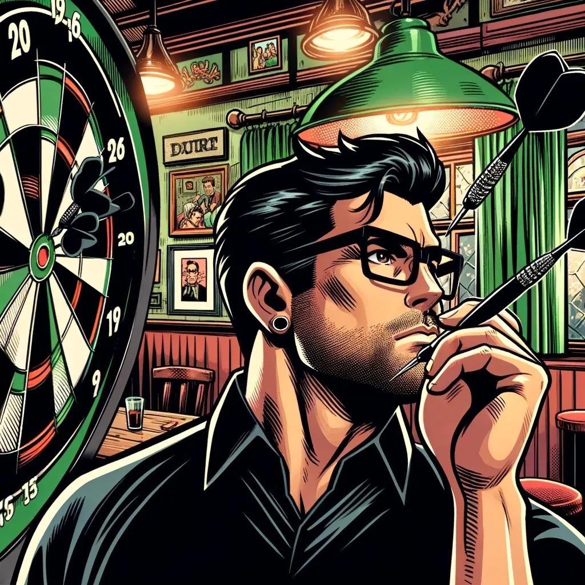
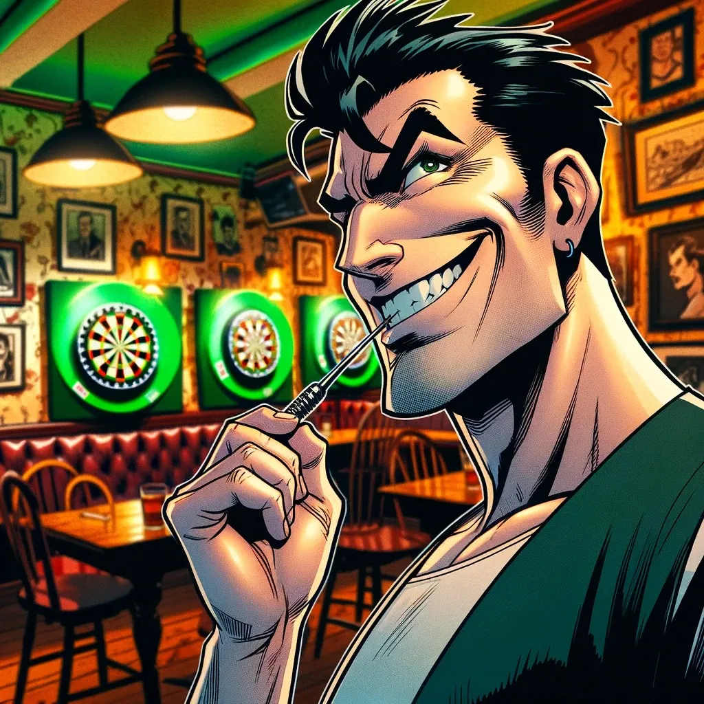
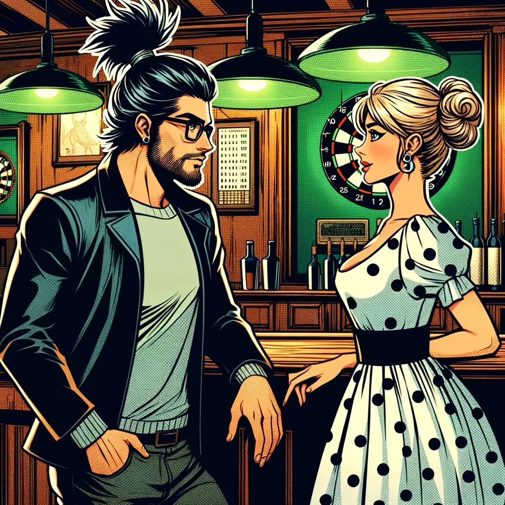
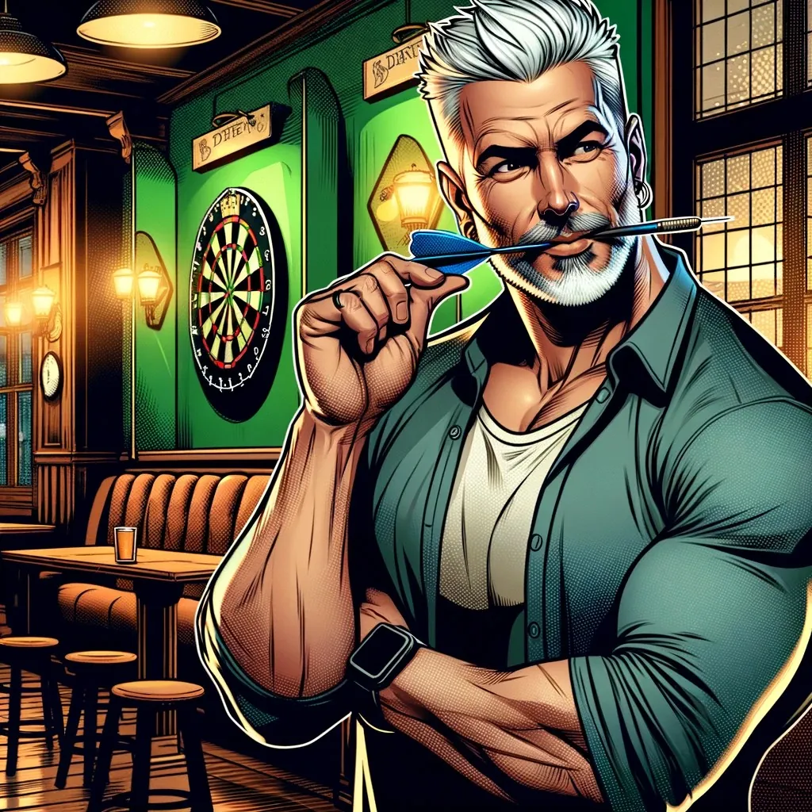
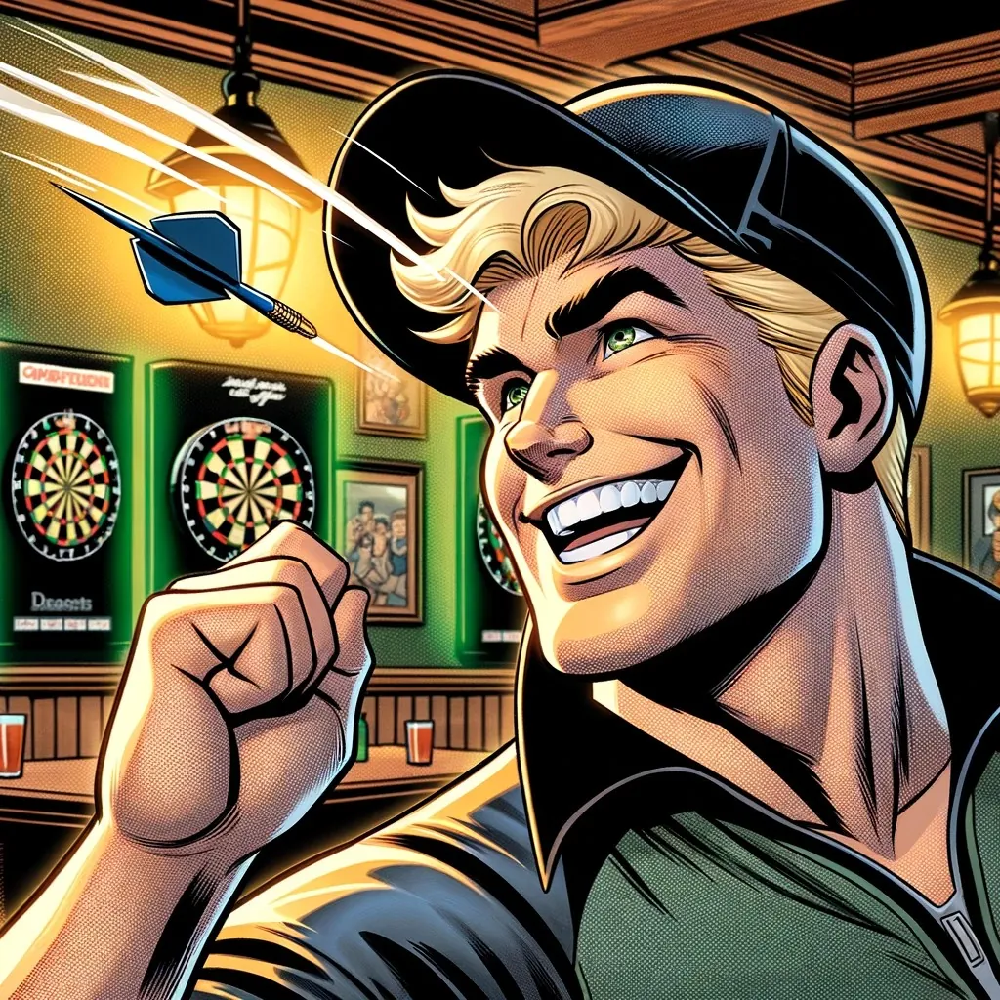

DC
DC DC Torpedo 9:3 Aschendorf DC B

In einem bemerkenswerten Dart-Spiel, das mehr war als nur ein Wettstreit zwischen zwei Teams, hat der DC Torpedo eindrucksvoll gegen den Aschendorfer DC B triumphiert. Es war ein Abend, der nicht nur durch herausragende individuelle Leistungen geprägt war, sondern auch durch einen unvergleichlichen Teamgeist und eine mitreißende Atmosphäre.
Das Team
Die Stimmung im Raum wurde durch die Unterstützung der Teammitglieder zusätzlich angeheizt. Jeder Treffer und jede High-Performance wurden lautstark gefeiert, was die Moral des Teams stärkte und einen unbestreitbaren Schritt zum Sieg darstellte.
Ein weiteres Highlight des Abends war die Pausenmahlzeit – ein köstlich zubereitetes Spanferkel, das zur guten Stimmung und Gemeinschaft beitrug. Das hervorragende Ambiente und die Bewirtung trugen ebenfalls zur elektrisierenden Atmosphäre bei.
Dieser Sieg gegen die Aschendorfer, war nicht nur ein Triumph der Fähigkeiten, sondern auch ein Beweis dafür, dass der Zusammenhalt und die Unterstützung jedes Einzelnen, ob an der Frontlinie oder im Hintergrund, der Schlüssel zum Erfolg sind. Der goldene Akzent im Trikot des DC Torpedo, ein Symbol für ihren verdienten Erfolg, glänzte besonders hell an diesem Abend.
Dieses Spiel wird in Erinnerung bleiben als ein Beispiel dafür, wie Teamgeist und gemeinschaftliche Anstrengung zu außergewöhnlichen Ergebnissen führen können. Der DC Torpedo hat bewiesen, dass sie mehr als nur ein Konkurrent in der Liga sind – sie sind ein Team, das zusammenhält und zusammen siegt.
Geblendet wurden unsere Gegner durch die unvergleichliche Strahlung von:
Garry


Bereits als Schlüsselspieler des DC Torpedo bekannt, hat er in diesem Spiel einmal mehr seine außergewöhnliche Fähigkeit unter Beweis gestellt, die Triple 19 mit beinahe spielerischer Leichtigkeit zu treffen. Sein beeindruckender 3:0 Sieg und ein AVG von 58 in seinem Einzel sind nur Zahlen, die kaum die Eleganz und Präzision seiner Würfe widerspiegeln.
Es scheint fast, als hätte Garry eine besondere Verbindung zur Triple 19. Mit jeder Bewegung seines Arms und jeder ruhigen, konzentrierten Ausführung traf er dieses Feld so konsequent, dass es für die Zuschauer und selbst für seine Gegner fast so wirkte, als würde er es zum Vergnügen tun. Diese Fähigkeit, unter Druck zu performen und dabei eine solche Treffsicherheit an den Tag zu legen, hebt ihn nicht nur als herausragenden Spieler hervor, sondern macht ihn zu einer Inspirationsquelle für das gesamte Team.
Arne


Der Star des Abends im Spiel des DC Torpedo gegen Aschendorf DC B, demonstrierte eine Leistung, die weit über das Gewöhnliche hinausging. Mit zwei spektakulären 180er Würfen und einem beeindruckenden AVG von 76 zeigte er eine Fähigkeit, die in der Welt des Darts als außerordentlich gilt.
Seine 180er Würfe waren nicht nur Punkte auf dem Scoreboard, sondern Kunstwerke der Präzision und des Timings. Jeder Wurf zeugte von Arnes tiefer Verständnis für das Spiel und seiner unerschütterlichen Ruhe unter Druck. Diese Würfe waren keine Zufälle, sondern das Ergebnis jahrelanger Übung, Konzentration und einer fast instinktiven Fähigkeit, die Darts exakt dort zu platzieren, wo sie den größten Einfluss haben.
Nico


Der Virtuose des Weltklasse-Finishs: Nico, ein herausragendes Mitglied des DC Torpedo, veranschaulichte in dem Spiel gegen Aschendorf DC B, was es bedeutet, auf höchstem Niveau zu performen. Seine beeindruckende Serie von Siegen, gekrönt durch ein spektakuläres Finish mit Triple 19, gefolgt von zwei Doppel 18 (129), zeugte von einer Fertigkeit, die in der Darts-Welt als wahrhaft Weltklasse gilt.
Dieses spezifische Finish, das nicht nur eine hohe Präzision, sondern auch eine strategische Denkweise erfordert, stellte eindrucksvoll Nicos Fähigkeit unter Beweis, unter Druck zu glänzen. Die Art und Weise, wie er diesen schwierigen Wurf mit scheinbarer Leichtigkeit ausführte, ließ die Zuschauer und seine Gegner gleichermaßen staunen. Es war nicht nur ein Zeugnis seines technischen Könnens, sondern auch seiner mentalen Stärke und seines Wettbewerbsgeistes.
Seine beeindruckende Leistung wurde umso bedeutender, da seine Freundin im Publikum war, deren Anwesenheit ihm zusätzliche Inspiration und Unterstützung bot, was seine herausragenden Erfolge an diesem Abend noch strahlender machte.
Franky


In der Welt des Darts ist Frank bekannt als ein Spieler, der normalerweise keine Gegner an sich heranlässt. Sein Ruf, Spiele konsequent zu gewinnen, hat ihn zu einem Schlüsselfaktor im Erfolg des DC Torpedo gemacht. An diesem besonderen Abend zeigte Frank erneut seine beeindruckenden Fähigkeiten. Obwohl er nicht ganz seine übliche Dominanz erreichte, war seine Leistung dennoch von entscheidender Bedeutung. Sein strategisches Spiel, gekoppelt mit einer ruhigen und fokussierten Haltung, half dem Team, die Spannung hochzuhalten und die Gegner stets unter Druck zu setzen.
Janni


Ein weiterer wertvoller Spieler des DC Torpedo, hatte an diesem Abend ein hart umkämpftes Spiel. Bekannt für seine konstante Leistung und seinen Kampfgeist, erlebte Jan ein knappes Match, das leider mit einer Niederlage endete. Es war ein seltenes Ereignis für Jan, der normalerweise für seine Siege und entscheidenden Beiträge bekannt ist. Seine Nervosität könnte ein Faktor gewesen sein, aber sie nahm seinem Engagement und seiner Leidenschaft für das Spiel nichts ab. Jans Kampfgeist und seine Fähigkeit, bis zum letzten Pfeil zu kämpfen, waren bewundernswert und spiegelten den unerschütterlichen Geist des gesamten Teams wider.